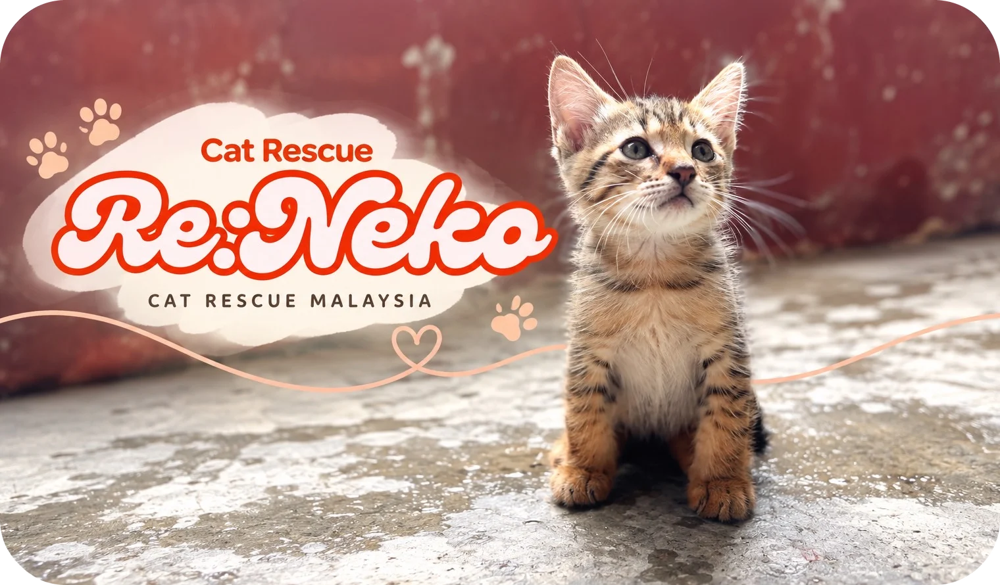
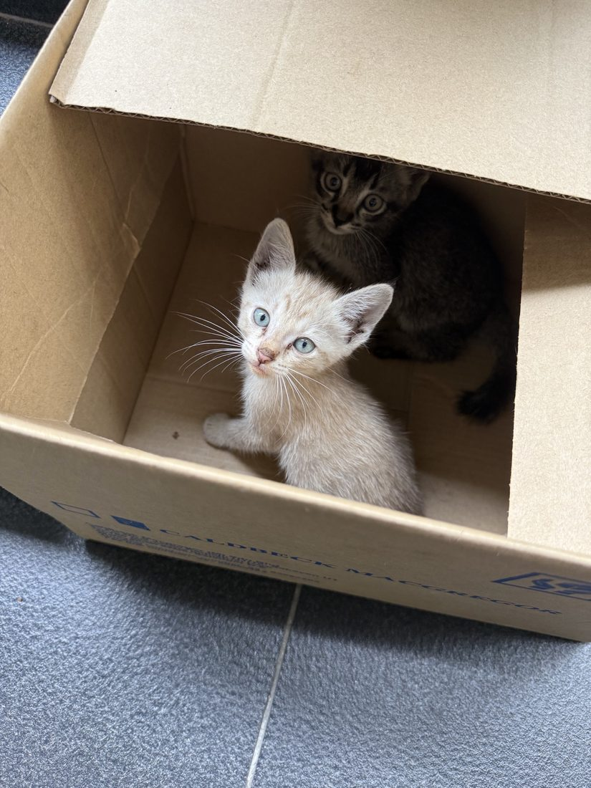
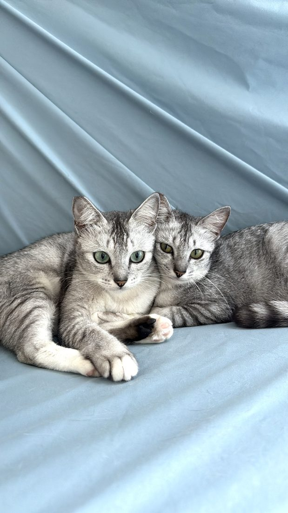
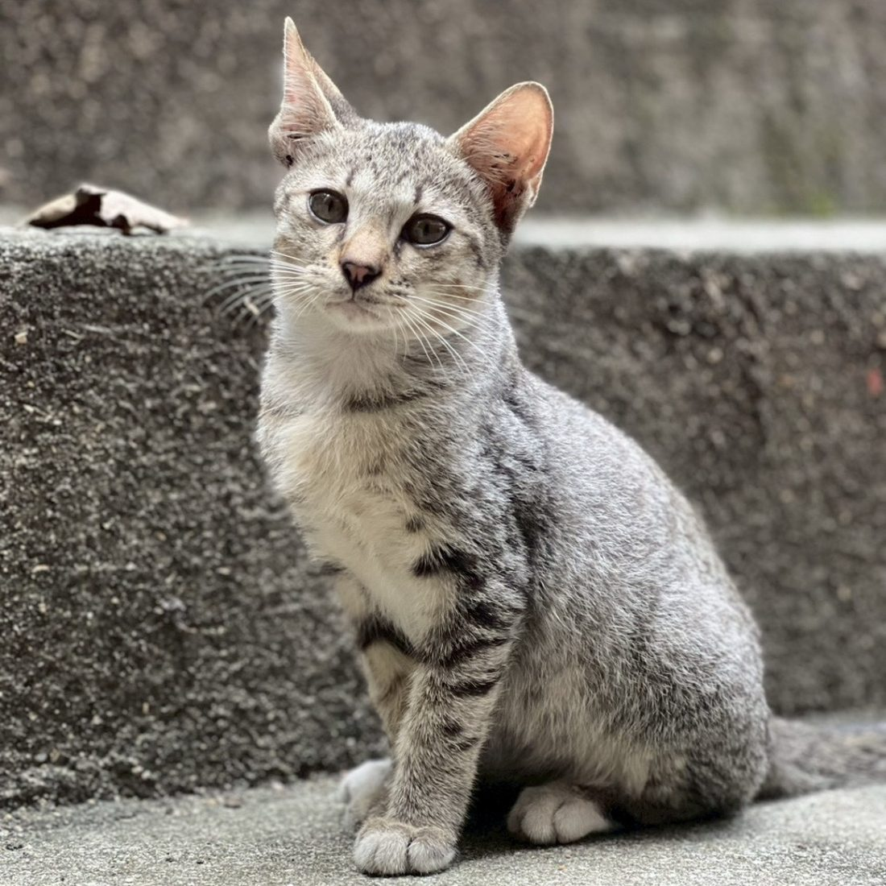
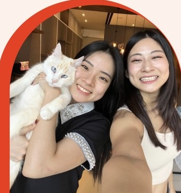
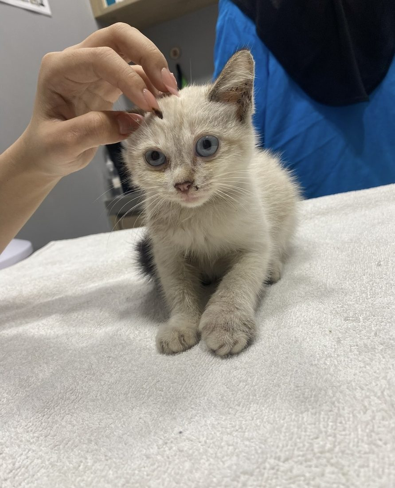
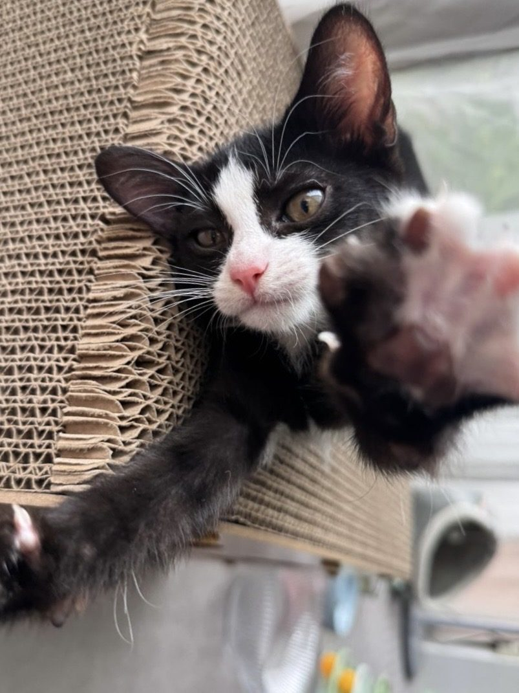

おうち、まってますRe:Neko(リネコ)は、マレーシア・クアラルンプールを拠点に活動する保護猫ボランティア団体です。行き場のない猫たちをレスキューし、大切に育て、あたたかい里親さんへとつなぐ「Rescue, Rehome & Return」を合言葉に活動しています。
Rescue, Rehome & Return — 3つのRを大切に、一匹一匹の命と向き合っています。

できる範囲で、野良猫や行き場のない猫たちをレスキューしています。私たちは小さなチームのため、集中的な医療ケアが必要なケースは、より大きな保護団体への相談をお願いする場合もあります。

保護した猫たちに、あたたかいベッドと十分なごはん、そして愛情を感じられる新しい家族を見つけます。詳しい流れは「里親になりたい方へ」をご覧ください。

TNR（不妊去勢・地域へのリターン）活動を行い、地域猫たちの数を人道的にコントロールしながら、暮らしの質の向上にも取り組んでいます。

マレーシア・クアラルンプールで、猫たちの Rescue・Rehome・Return に取り組む、2人の想いから始まった団体です。
里親探しも、TNRによる地域猫のお世話も、すべては猫への純粋な愛情が原動力になっています。
今はまだ2人だけの小さな活動ですが、たくさんの猫たちとのふれあいに支えられています。いつも見守ってくださり、ありがとうございます。
保護した猫たちの医療費・ミルク・ごはん・不妊去勢手術などの活動費は、皆さまからのご寄付によって支えられています。

ワクチン1本、ごはん数日分、あたたかい寝床になります。どんな金額でも、確かに猫たちの力になっています。
下記口座宛にお振込みいただけますと幸いです。金額は問いません、温かいご支援をお待ちしております。
振込先情報は近日公開予定です。お急ぎの方は InstagramのDM よりお問い合わせください。
下記の流れでお申し込みいただけます。まずはお気軽にご応募ください。

あなたのおうちに迎えられることを、この子たちは待っています。
Instagramで猫をチェックハイライト「ADOPT ME!」で、里親募集中の猫たちをご覧ください。
下記フォームからお申し込み里親応募フォームをご入力の上、送信し、InstagramのDMもお送りください。
対面での顔合わせ猫との相性を見るため、実際に会っていただきます。
里親契約・ご寄付契約と合わせて、医療費等へのご寄付をお願いしています。
お迎え新しい家族の一員として、おうちへお迎えいただきます。
※ ご寄付はTNRや医療費として大切に使わせていただきます。金額は治療内容により異なりますが、目安はRM300〜です。